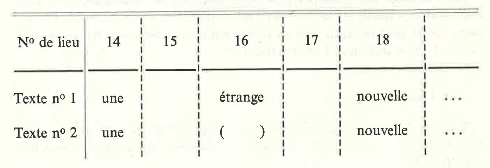
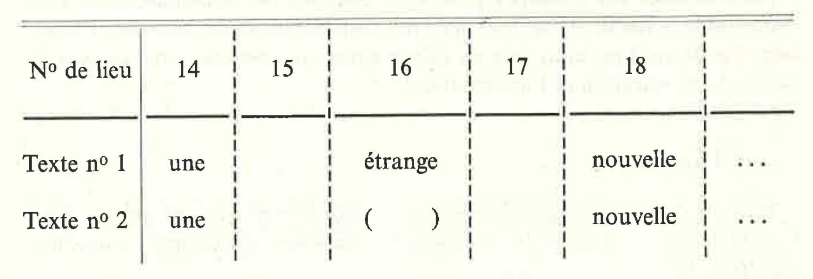

Intro to automatic collation
Programme doctoral en études numériques. Formation Textes et éditions numériques, 25 et 26 avril 2019, Université de Lausanne
Elena Spadini (Université de Lausanne)
- What is collation
- Where does it come from
- The beginning of automatic collation
- The present of automatic collation
machine assisted
computer-supported
semi-automatic
COLLATION
in order to spot their differences
Terminology
compare the readings of two or more witnesses of a work, in order to spot the textual variants between themA reading is how a portion of the work is recorded in one witness. For example, considering the first verse of a poem,
- the reading of witness 1 (W1) is the sun is high
- the reading of witness 2 (W2) is the star is high
- the reading of witness 3 (W3) is the sun is high
A textual variation occurs when the witnesses have different readings. In the example above,
- there is textual variation between W1 and W2 and between W2 and W3
- there is no textual variation between W1 and W3.
Examples. How many witnesses?
- Julius Caesar's De bello gallico. 255 (manuscripts)
- Dante's Commedia. 600 (manuscripts and early prints)
- Samuel Beckett's Stirring Still. 40 (copybooks, holograph manuscripts, typescripts, carbon copies)
Collate ... why?
- establishing a critical text, as for a critical edition
- tracking the writing process, as for a genetic edition
- studying the textual transmission, for purposes other than the edition

Library of Alexandria
Public Domain, Link
{kind=link}

Antonio da Fabriano II, Saint Jerome
Public Domain, Link

ex multarum rationum collegio veritas facilius elucescat
from the gathering of many proofs the truth comes to light more easily
Nicolò Maniacutia, Libellus de corruptione et correptione Psalmorum
et aliarum quarundam scripturarum
Bibliothèque interuniversitaire Montpellier, ms 294 f 144r. Link

recensere sine interpretatione et debemus et possemus
Karl Lachmann
Public Domain, Link
Timpanaro, Sebastiano. La genesi del metodo di Lachmann.
Raymond Brulez, ms of Sheherazade (1932)
Reproduced only for didactic purposes
copy-text |
bedierisme |
neo-lachmannian school |
genetic criticism |
filologia d'autore |
new bibliography |
Historisch-kritische Ausgabe |
& more ...
centuries of collation
tiring, error-prone, difficult to record all data
The beginning of automatic collation

Hinman Collator
See in action!
link and licence on the image

R. Marichal, Préface a La critique des textes et son automatisation
Froger, Dom Jacques. La critique des textes et son automatisation. Dunod, 1968.
Voir article Froger 1965.



Collate
The present of automatic collation


Schmidt, D. and Colomb, R., 2009. "A data structure for representing multi-version texts online". International Journal of Human-Computer Studies, 67.6, 497-514.
Schmidt, D., 2009. "Merging Multi-Version Texts: a Generic Solution to the Overlap Problem". In Proceedings of Balisage: The Markup Conference 2009. Balisage Series on Markup Technologies, vol. 3 (2009).
These slides reuse materials from
Elena Spadini, Intro to automatic collation
CC-BY-NC-SA
from the gathering of many proofs the truth comes to light more easily
Nicolò Maniacutia, Libellus de corruptione et correptione Psalmorum
et aliarum quarundam scripturarum
Bibliothèque interuniversitaire Montpellier, ms 294 f 144r. Link

Leonardo da Vinci, Vitruvian man
Public domain. Link

recensere sine interpretatione et debemus et possemus
Karl Lachmann
Public Domain, Link
Timpanaro, Sebastiano. La genesi del metodo di Lachmann.
Raymond Brulez, ms of Sheherazade (1932)
Reproduced only for didactic purposes
centuries of collation
How manual collation works
- choose a base witness
- compare one by one the other witnesses to the base one (silent or aloud)
- register important variants
tiring, error-prone, difficult to record all data

Hinman Collator
See in action!
link and licence on the image
Pour les collations l'emploi d'un ordinateur est dans la plupart de cas irréalisable.
R. Marichal, Préface a La critique des textes et son automatisation
La collation des manuscrits est une opération qui relève en quelque sorte de la comptabilité: la machine peut fort bien l'exécuter.
Froger, Dom Jacques. La critique des textes et son automatisation. Dunod, 1968.
Voir article Froger 1965.

Collate
Robinson, P. M. W. 1989. “The Collation and Textual Criticism of Icelandic
Manuscripts (1): Collation.” Literary and Linguistic Computing 4 (2): 99–105.
Manuscripts (1): Collation.” Literary and Linguistic Computing 4 (2): 99–105.
1991, annunciato nella lista di diffusione Humanist
(dhhumanist.org/Archives/Virginia/v04/1240.html)
(dhhumanist.org/Archives/Virginia/v04/1240.html)
Schmidt, D. and Colomb, R., 2009. "A data structure for representing multi-version texts online". International Journal of Human-Computer Studies, 67.6, 497-514.
Schmidt, D., 2009. "Merging Multi-Version Texts: a Generic Solution to the Overlap Problem". In Proceedings of Balisage: The Markup Conference 2009. Balisage Series on Markup Technologies, vol. 3 (2009).
Most used software nowadays
- http://collatex.net/
- https://github.com/DiXiT-eu/collatex-tutorial
- https://github.com/interedition/collatex
CC-BY-NC-SA